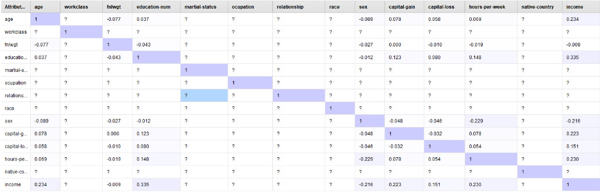
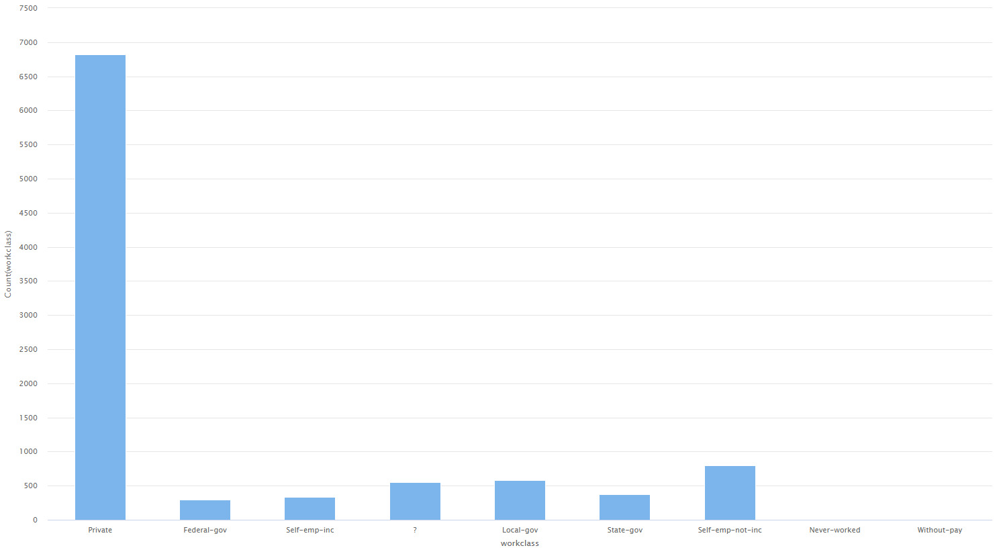
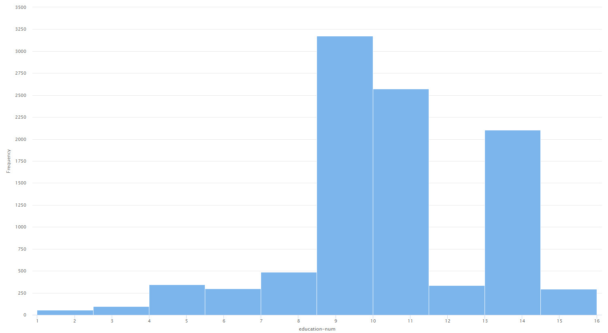
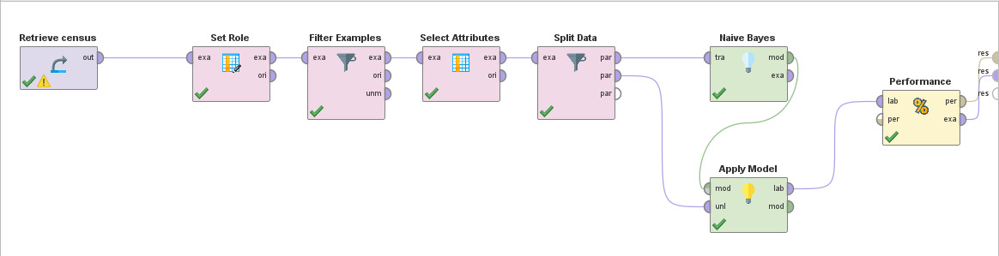
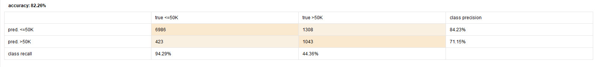

Dataset analysis of a census made in 1994.
The 1994 United States census data set, compiled by Barry Becker, is a valuable source of information for analyzing the demographics and economy of that period in the country. This dataset includes a wide variety of individual characteristics, such as age, gender, educational level, occupation, marital status, and more.
The objective of this dataset is to predict whether or not a person earned more than $50,000 in 1994, based on some attributes of the person such as: their level of education, their job, age, among others.
In this study case, I used the Census Income dataset that is available in UCI repository. It has 32000 rows of data.
You can find the dataset in this link.
This dataset has 14 predictor variables, plus 1 target variable, which is the one you want to predict. Of these 14 variables, 6 are numerical and the rest are categorical (including the target variable).
The variables contained in the dataset are the following:
There are 2399 rows that contain missing data, in the occupation, workclass and native-country attributes. In the first instance, it was decided to exclude these rows to carry out a first evaluation and then compare by replacing the missing values with the most common one in the dataset, to see which is more effective.
From this set of variables, you can choose whether to discard education or education-num, since both represent the same thing, the maximum study achieved by a person. In this case, I discarded education, since education-num allows us to quickly know if an individual has a higher level of education than another, due to the numerical order that is generated.
Looking at the correlation matrix, we can see that income and fnlwgt have a very low correlation, so we can exclude this variable from the model. On the other hand, we see that education and income are decently correlated so we can assume that it will have a great impact when it comes to prediction.
There are some cases of outliers, particularly in the "capital-gain" attribute where you can find 40 cases where your profit is between 90k and 100k dollars, while in the majority of cases they are between 0 and 20k dollars. These 40 cases were discarded for the analysis of this dataset.
Viewing the graphs of some of the attributes we can notice that the vast majority of those interviewed in the census were private workers (6816).
And in the case of education, all the data is concentrated in the values from 8 to 12, which refers to people who have completed secondary school.
In deciding which models to develop or algorithms to use, it is essential to consider the type of problem, which in this case consists of predicting if the salary of a person is greater or not than 50K dollars, from a set of predictors and therefore it is a supervised one and classification. There is a set of algorithms that can be used in these conditions, in this case I decided to use Naive Bayes approach.
The first task to perform within Rapid Miner will be to import the dataset and mark our target variable using the Set Role operator. After that, the Filter Examples operator is applied to remove the attributes that were equal to "?". Following that, the Select Attributes operator is applied to remove education and fnlwgt attributes from the dataset.
Once the dataset has been correctly prepared, Naive Bayes will begin to be applied and evaluated to see the performance. For this, the Split Data operator is used to split the dataset in two parts, one for training and another one for testing. Once the dataset is splitted, we can apply Naive Bayes, and use the Performance operator to evaluate how well our model predicted.
The Rapid Miner process should look something like this:
As can be seen, the model had a 82.26% accuracy, which is a very good result for the context of the dataset. It could be better, perhaps using Cross Validation and see if it changes the result. Also test if other algorithms would have done better than Naive Bayes did. But as I mentioned before, 82.26% is a very good result for predicting if a person made or not 50k dollars in the entire year.
